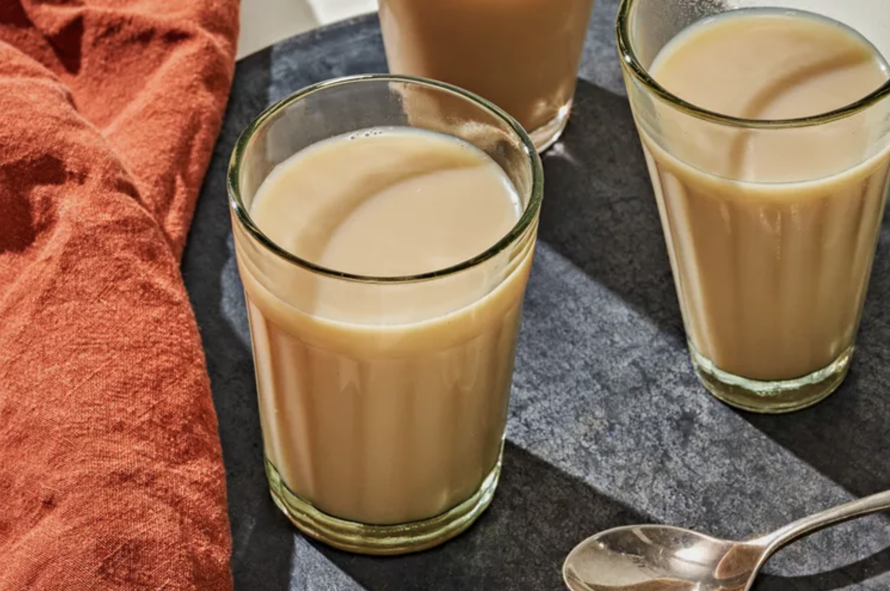

Chai Milk Tea

Description
A sweet, creamy, and fragrant drink from South Asia. It’s often called
chai latte
or
chai tea latte
.
Ingredients
Steps
Sources
Tea for Turmeric
Food & Wine
←
Back to recipe list